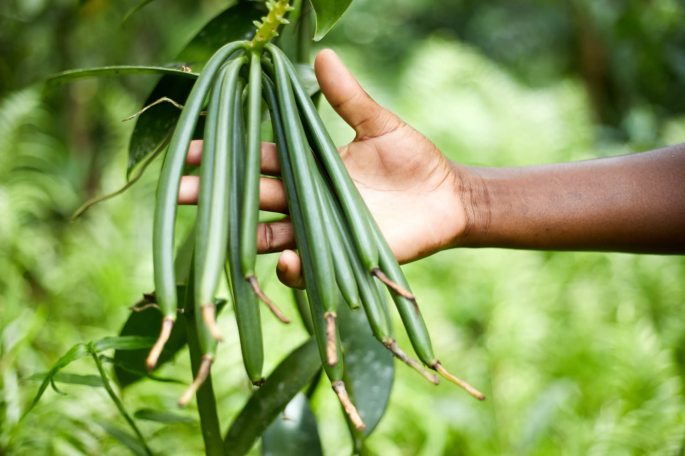

CT Artisanal Pantry began with a simple belief — and a family's move to Madagascar that changed how we think about flavour.
Four years ago, we made Madagascar our home. As a family who loves cooking together, we found the ingredients there unlike anything we'd worked with before — starting with the first vanilla bean we scraped for our favourite chocolate banana milkshake. That discovery became a pantry: a small, considered collection of ingredients we'd proudly cook with ourselves.

Climate, soil, and cultivation shape the character of every ingredient in our pantry. From Madagascar's fertile landscapes to remarkable growing regions around the world, each ingredient reflects the place it comes from.
We work directly with growers rather than brokers, so every ingredient can be traced back to a specific region — not just a country of origin on a label.
Shop the Origins